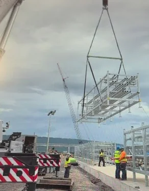
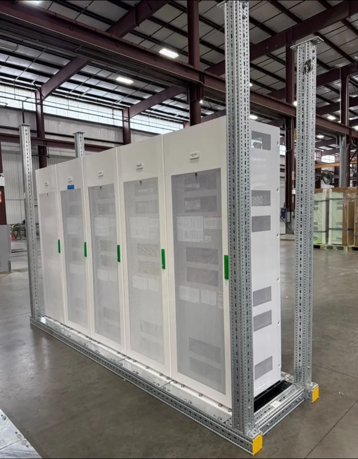
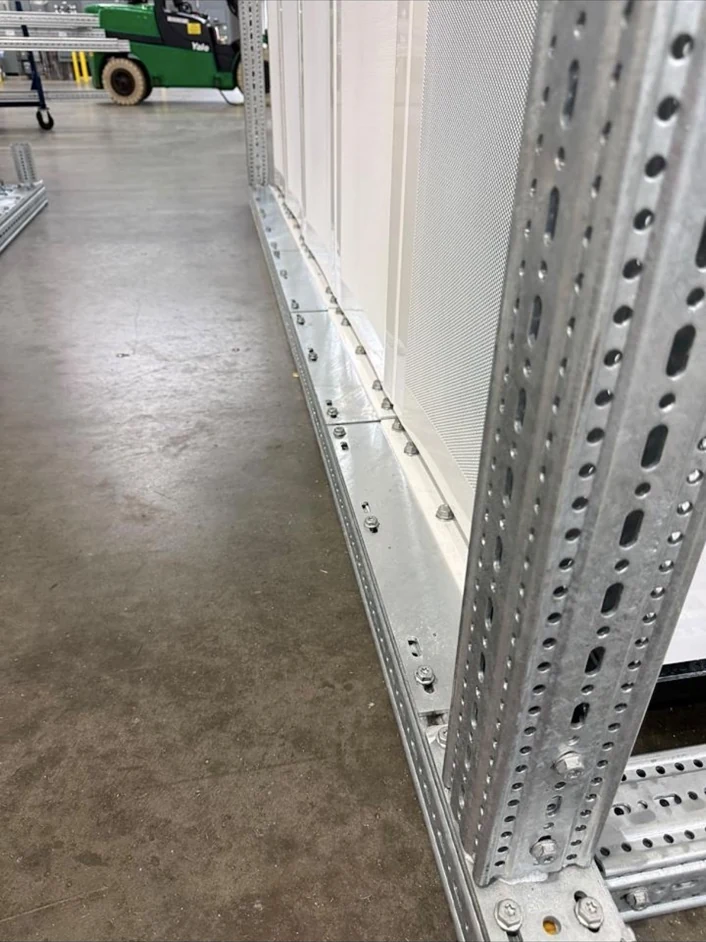
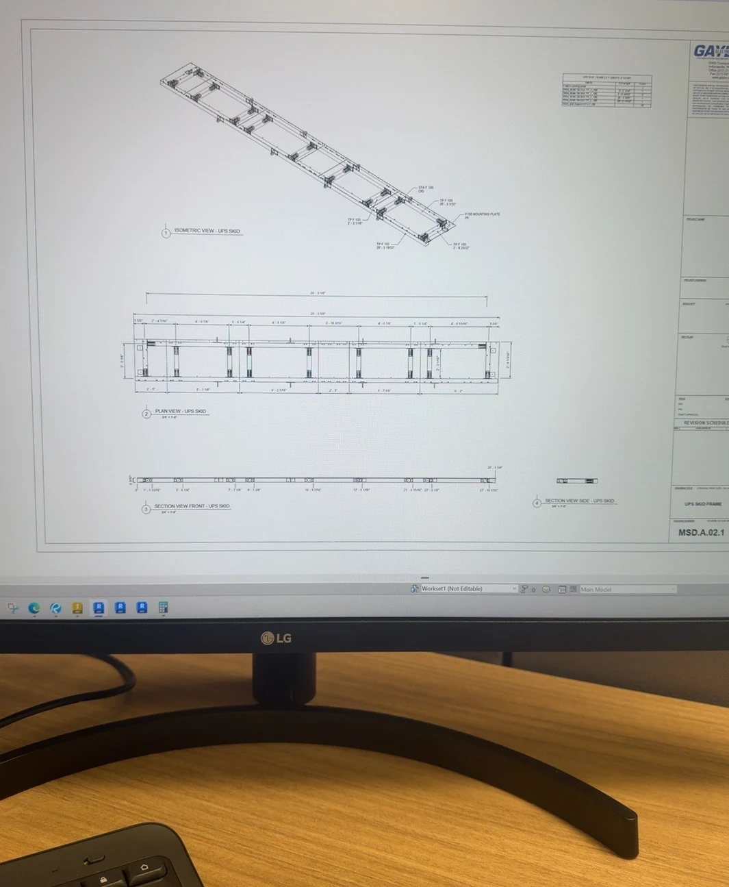

Modular Electrical Skid: Model to Field
A fast Revit ramp-up on a multi-hundred-million-dollar data center project, carrying modular electrical skid work from submittal and coordinated modeling through fabrication, review, and the moment the finished assembly was ready for the field.

Rapidly become productive in professional Revit and VDC workflows while supporting modular electrical skids on a multi-hundred-million-dollar data center project. The design had to move cleanly from submittal information to coordinated model content, published sheets, fabrication, and field installation.
I created and revised skid-related model content, interpreted prints and submittals, checked dimensions and constructability, supported sheet production, and used Revit, Inventor, AutoCAD, Bluebeam Revu, Autodesk Construction Cloud, and Evolve throughout the workflow. I also supported skid-frame layout, drawing development, fabrication-ready coordination, and the planning tied to the final lift and field execution.
How the work moved from problem to functioning result.
Translate source information
I converted 2D prints, AutoCAD details, equipment information, and existing plans into coordinated 3D content.
Design for fabrication
The model had to represent how the frame, equipment, mounting conditions, and routed systems would actually be assembled in the prefab environment.
Document and coordinate
I supported the path from submittal review to published sheets while checking dimensions, installation details, and potential conflicts before field work.
Connect calculations to execution
The project became real when I watched a skid influenced by my modeling and calculations being lifted roughly 50 feet into position on the jobsite.
The skid work tied together design, documentation, fabrication, and field execution. What started as a steep software learning curve turned into real ownership on a modular system that progressed from modeled intent to built hardware and jobsite-ready delivery.
This project showed me how much value lives in the handoff between digital work and physical reality. A good model is not just visually correct—it has to support fabrication, installation planning, and confident decision-making in the shop and in the field.
A tighter selection showing the move from drawings to fabricated hardware and field execution.
Only the strongest visuals are shown here so the page stays focused on the design-to-field story.


